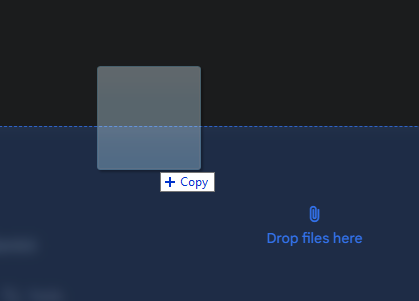
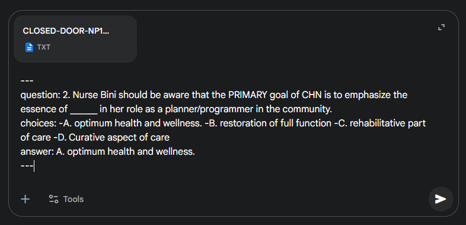

( ﾉ ﾟｰﾟ)ﾉ Instructions on how to format the txt file ＼(ﾟｰﾟ＼)
Please follow the instructions below to ensure your text file is properly formatted for the Reviewer App. (＾▽＾)
1. Go to Gemini
2. Drag the unformatted text file on to the input bar
3. Copy the text below
4. Paste the text on the input bar and submit
5. Wait for the response and copy the output
6. Paste the output on a text file and save it as .txt
7. If something goes wrong, chat me on Facebook
8. Enjoy using the app! ~\(≧▽≦)/~